Acceleration For All.
A partnership campaign rebuilding the on-ramp to entrepreneurship — for everyone the old accelerator playbook left out.

The Problem
For too many aspiring entrepreneurs, access is the biggest barrier to success. Great ideas exist everywhere—but mentorship, funding, and startup networks are often concentrated within the elite circles of Silicon Valley. ViewSonic recognized that talented founders outside traditional tech hubs were being overlooked simply because they lacked the right connections or resources.
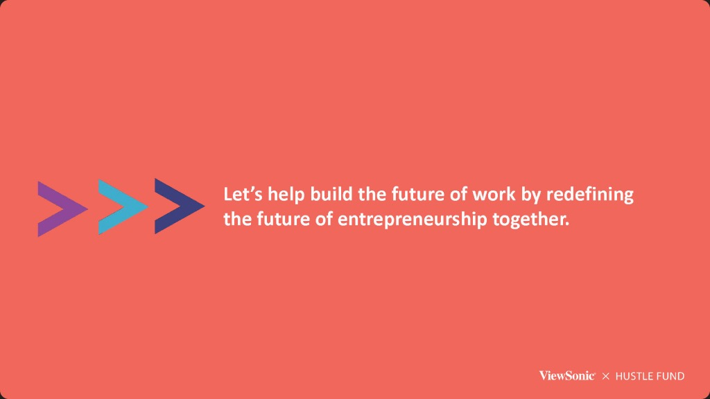
The Solution
To help level the playing field, ViewSonic launched Acceleration — a program designed to support emerging entrepreneurs with the tools, exposure, and partnerships needed to grow their ideas. By creating opportunities outside the traditional accelerator model, the campaign focused on empowering underrepresented founders through collaboration, mentorship, technology, and funding support. The initiative transformed ViewSonic from a technology brand into a catalyst for innovation and opportunity.

An identity
The lockup turns the "A" of Acceleration into a chevron — the same forward-pointing mark that drives the rest of the system. A handwritten for all reframes the year-stamp as a promise. Built to read at any scale, on any surface, in any of six regions.
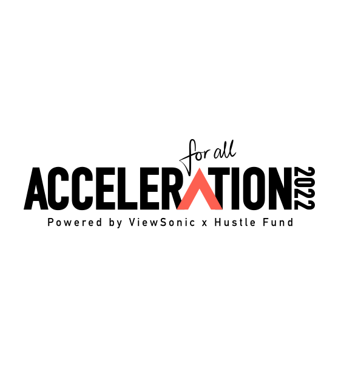
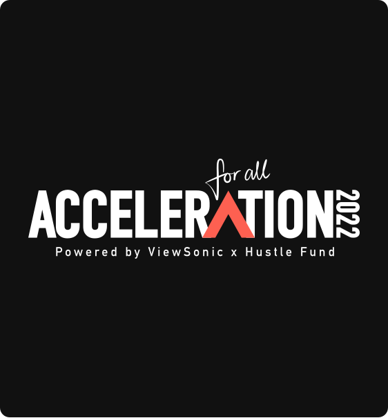
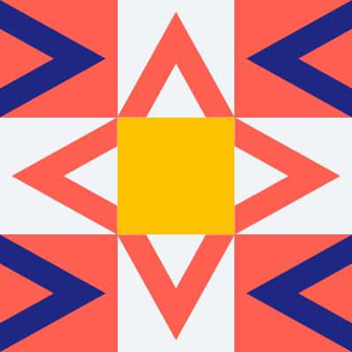
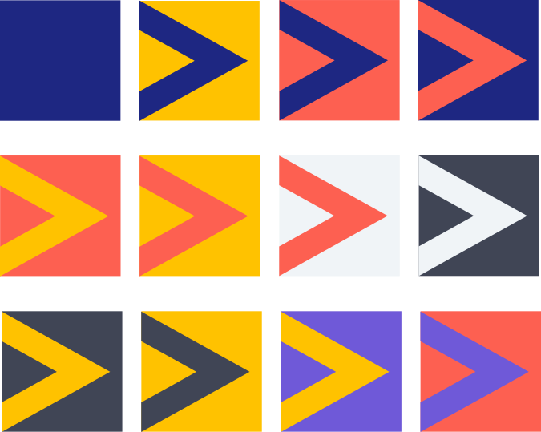
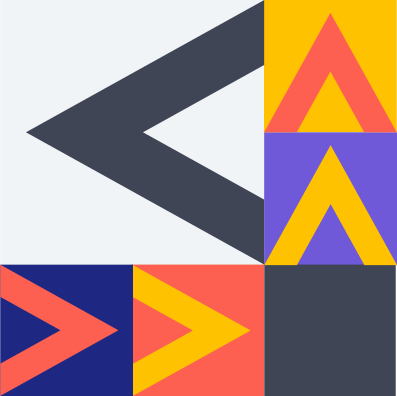
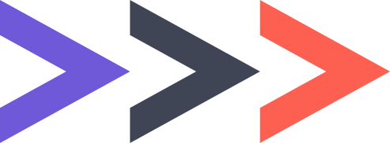
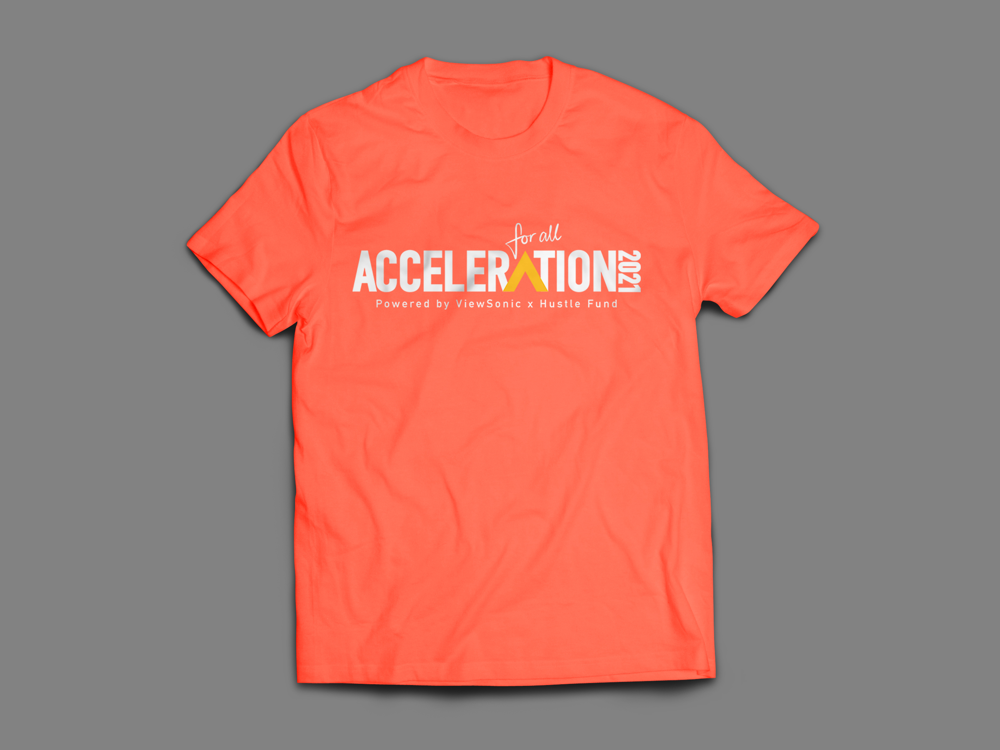
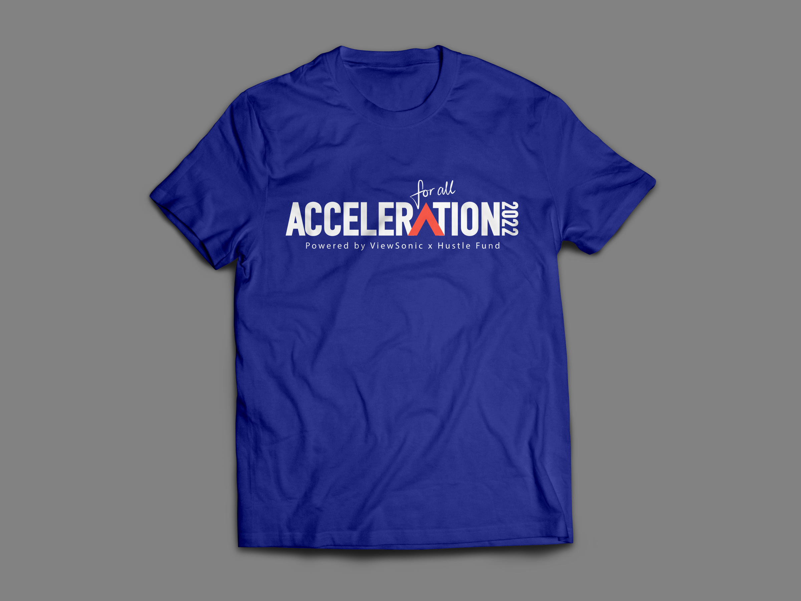
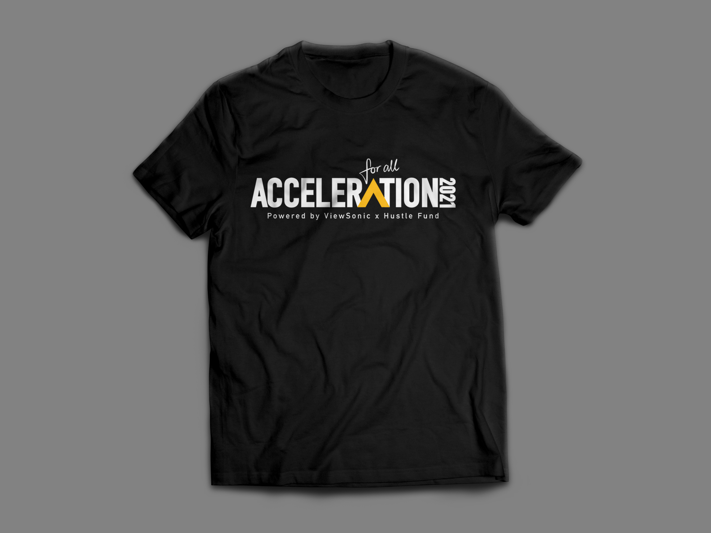
The Results
Acceleration For All helped position ViewSonic as a brand invested not just in products, but in people and progress. The campaign generated meaningful engagement within entrepreneurial communities, strengthened brand perception, and created authentic connections with the next generation of innovators. Most importantly, it opened doors for founders who otherwise may never have had access to the startup ecosystem.
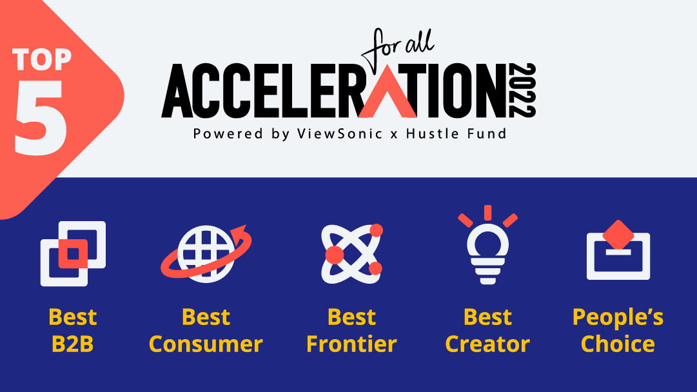
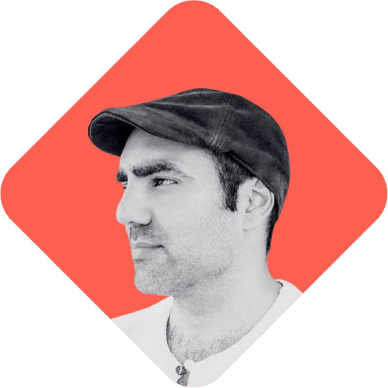
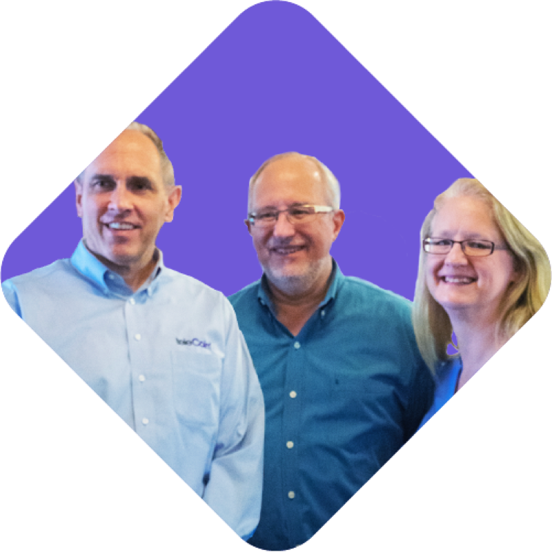